Fit check · every item on its friend
composed live from anchors (no painting), so the numbers are the spec · sit pose; hop frames need their own anchors
Bramble
8 items

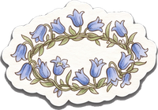
bluebell-crown · head
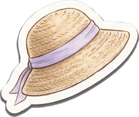
bonnet · head
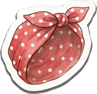
headscarf · head
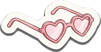
heart-glasses · eyes
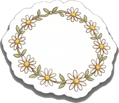
daisy-chain · neck
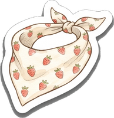
berry-kerchief · neck
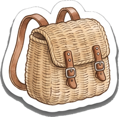
basket-pack · back
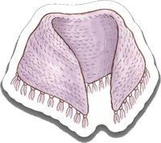
shawl · body
Hare
12 items


straw · head

bowtie · neck

neckerchief · neck

crown · head

satchel · back

bobble · head

specs · eyes

pirate · head

wizard · head

acorn · head

cape · back

paper-crown · head
Puddle
8 items

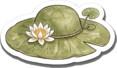
lilypad-hat · head
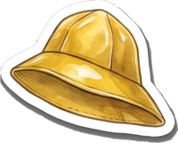
souwester · head
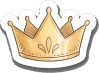
frog-crown · head
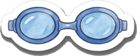
goggles · eyes
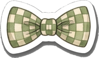
check-bowtie · neck
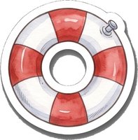
swim-ring · body
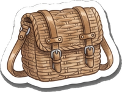
reed-satchel · back
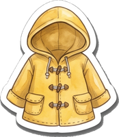
raincoat · body
Button
8 items

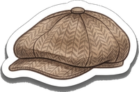
flat-cap · head
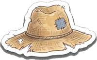
scarecrow-hat · head
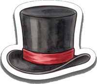
top-hat · head
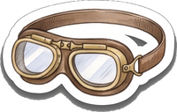
aviator-goggles · eyes
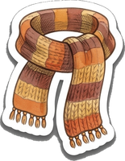
autumn-scarf · neck
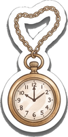
pocket-watch · neck
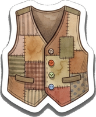
waistcoat · body
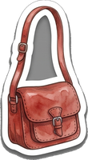
post-satchel · back
Marmalade
8 items

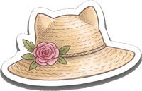
garden-hat · head
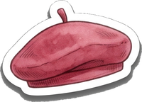
beret · head
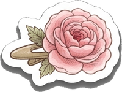
rose-clip · head
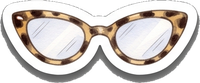
cateye-glasses · eyes
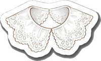
lace-collar · neck
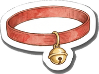
red-bell-collar · neck
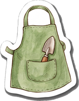
apron · body
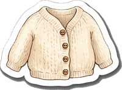
cardigan · body
Nipper
8 items

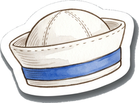
sailor-cap · head
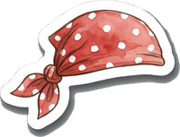
bandana · head
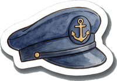
captain-hat · head
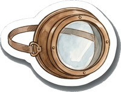
diving-mask · eyes
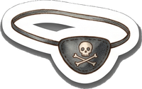
eyepatch · eyes
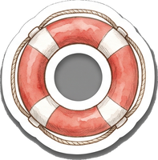
life-ring · body
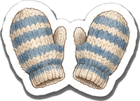
claw-mittens · claws
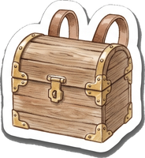
chest-pack · back
Sprig
8 items

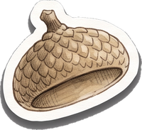
acorn-cap · head
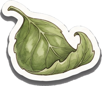
leaf-hat · head
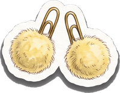
antenna-poms · antennae
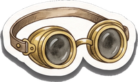
explorer-goggles · eyes
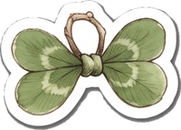
clover-bowtie · neck
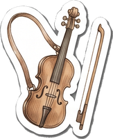
fiddle · back
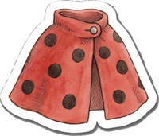
ladybird-cape · back
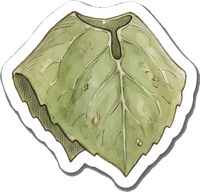
leaf-poncho · body
Every item placed from the anchors in Design/friends/wardrobe-anchors.json, on the sit pose. The built-in accessories (Bramble's bow, Puddle's and Nipper's neckerchiefs, Button's cap, Marmalade's collar, Sprig's satchel, Hare's scarf) still show underneath: each friend needs an accessory-free base sticker before this ships. Pairs (claw mittens, antenna pom-poms) are split in half, one per claw or antenna.